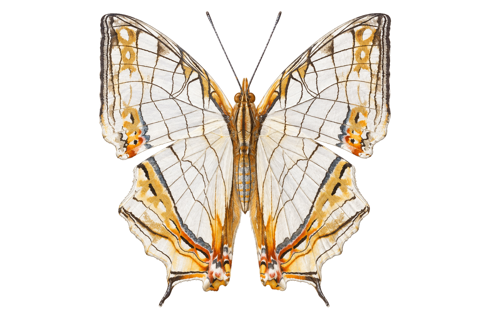

Nymphalidae · 106 / 165
Cyrestis thyodamas
Cyrestis thyodamas

বৈশিষ্ট্য ও শনাক্তকরণ
সাদা ডানায় পাথরের দেয়ালের জোড়ের মতো সরু রেখা; পেছনের ডানায় ছোট লেজ থাকে।
স্ত্রী ও পুরুষের পার্থক্য
স্ত্রী-পুরুষ দেখতে কাছাকাছি; ডানার গঠন ও উদরও পরীক্ষা করুন, শুধু রঙ যথেষ্ট নয়।
আকার
সামনের ডানার দৈর্ঘ্য 26-36 মিমি। সাধারণ সূত্রের মান; শুধু ওকিনাওয়ার নমুনার মাপ নয়।
ওকিনাওয়ার দ্বীপে রেকর্ড
রেকর্ডকৃত দ্বীপের উদাহরণ: ওকিনাওয়া মূল দ্বীপ, ইশিগাকি, ইরিওমোতে, ইয়োনাগুনি, তাকেতোমি, কোহামা, কুরোশিমা, হাতেরুমা, মিয়াকো, কুমে, ইহেয়া, ইজেনা, ইয়ে, কোউরি, সেসোকো, ইয়াগাজি, তোকাশিকি, জামামি, আকা, মিনামি দাইতো, ইরাবু, শিমোজি, তারামা, হাতোমা, গেরুমা, কুদাকা, হামাহিগা, ৎসুকেন, আগুনি, তোনাকি। এটি সব রেকর্ডস্থানের পূর্ণ তালিকা নয়।
আবাসস্থল
বন, বনপ্রান্ত, উপত্যকা ও ঝরনার আশপাশ।
জীবনযাপন ও অতিরিক্ত তথ্য
প্রদেশে রেকর্ড বা প্রজননের তথ্য আছে; প্রতিটি দ্বীপে বর্তমান প্রাচুর্য বা প্রতিবছরের উপস্থিতির নিশ্চয়তা নয়।
শূককীট ও খাদ্য উদ্ভিদ
মূলত Ficus গণের বট, আকো ও ইনুবিওয়া।
তথ্যসূত্র ও সহায়ক পাঠ
- 日本の蝶：形態・雌雄差
ডেটায় উল্লেখিত সূত্র দেখার তারিখ: 2026-11-10 - 沖縄蝶類生態図鑑：イシガケチョウ
ডেটায় উল্লেখিত সূত্র দেখার তারিখ: 2026-11-10 - 昆虫エクスプローラ：前翅長
ডেটায় উল্লেখিত সূত্র দেখার তারিখ: 2026-11-10
তথ্য সরবরাহকৃত ডেটার উপর ভিত্তি করে তৈরি (হালনাগাদ: ১০ নভেম্বর ২০২৬)। কোনো দ্বীপের রেকর্ড সেখানে বর্তমান স্থায়ী বসবাস বা সহজে দেখা পাওয়ার নিশ্চয়তা নয়। চিত্র নির্দেশক; শনাক্তকরণে বাস্তব নমুনা ও সূত্র মিলিয়ে দেখুন।